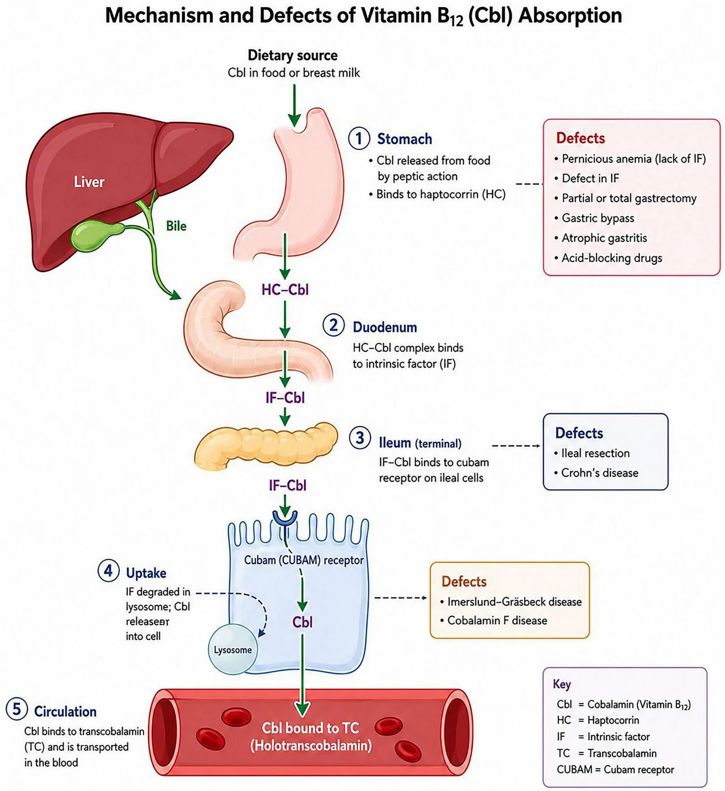
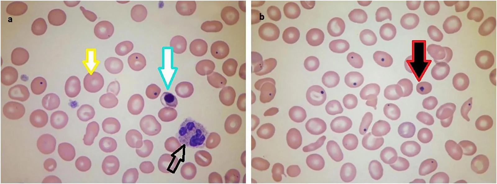

3089 — Thiếu vitamin B12 và thiếu máu megaloblastic sau tăng dung tích bàng quang bằng hồi tràng ở trẻ / Vitamin B12 deficiency and megaloblastic anaemia after ileocystoplasty
Tags: pattern:thieu-mau-hong-cau-to pattern:thieu-hut-vi-chat pattern:bien-chung-muon pattern:thieu-mau vung:tiet-nieu vung:bang-quang vung:tuy-xuong anatomy:hoi-trang-cuoi protocol:B12 protocol:MMA-homocysteine protocol:MRI-tuy-song incidentaloma:thieu-mau-sau-tang-dung-tich
Mức chắc chắn (certainty): tổng hợp y văn (literature synthesis) — ghép bốn loạt trẻ tăng dung tích bàng quang (J Urol 2008, PMID 18295265; J Pediatr Urol 2012, PMID 21183408; J Pediatr Urol 2015, PMID 26165193; Sci Rep 2024, PMC10879155), một tổng quan chuyển lưu niệu (Transl Androl Urol 2026, PMC13657767), hướng dẫn EAU/ESPU/ERN 2025 về spinal dysraphism (Eur Urol Open Sci 2026, PMC13136771) và một tổng quan về biểu hiện huyết học của thiếu B12 (Front Nutr 2026, PMC13508813). Không có ca do nhóm tự chụp.
Câu hỏi thực hành: bé gái 13 tuổi, bàng quang thần kinh do thoát vị tủy–màng tủy, tăng dung tích bàng quang bằng hồi tràng (ileocystoplasty) cách đây 8 năm, tự thông sạch (CIC) qua lỗ thông Mitrofanoff. Ba tháng nay mệt, học kém, da hơi vàng, không sốt, không đái máu. Xét nghiệm: Hb 9,4 g/dL, MCV 106 fL, LDH 720 U/L, haptoglobin thấp, B12 180 pg/mL, folate 9,8 ng/mL, creatinin bình thường, ferritin 42 ng/mL. Bài chốt ba quyết định: (1) thiếu B12 sau tăng dung tích bằng hồi tràng là chuyện của năm thứ 5–7 trở đi, không phải biến chứng của giai đoạn hậu phẫu — 21% trẻ có B12 thấp và 41% thấp–giới hạn ở mốc 7 năm, nên "mấy năm đầu bình thường" không cho phép ngừng theo dõi; (2) vùng B12 150–300 pg/mL là vùng xám, phải đo MMA/homocysteine trước khi kết luận, vì tổn thương tủy có thể xuất hiện trước khi có thiếu máu; (3) uống 250 µg/ngày không đủ bền vững (chỉ 4/23 bệnh nhi về bình thường sau trung bình 49 tháng) — dùng tiêm bắp 1000 µg hoặc uống liều cao ≥ 1000 µg/ngày, và không bao giờ bù folate đơn thuần. Nối 281 – Thoái hóa tủy kết hợp bán cấp do thiếu B12, 280 – Bệnh tủy do thiếu đồng, 3058 – Xuất huyết từ mảnh ghép ruột sau tăng dung tích bàng quang, 672 – Biến chứng muộn sau tái tạo bàng quang bằng ruột.
1. Tổng quan bệnh học – cơ chế hình ảnh: vì sao cắt đoạn hồi tràng lại gây thiếu B12 SAU NHIỀU NĂM
- Chỉ một cửa hấp thu: B12 (cobalamin, Cbl) trong thức ăn được pepsin/acid dạ dày tách khỏi protein và gắn haptocorrin (HC); ở tá tràng protease tụy phân hủy HC, Cbl chuyển sang yếu tố nội tại (intrinsic factor, IF) do tế bào thành tiết ra; phức hợp IF–Cbl mới gắn được receptor cubam (cubilin–amnionless) trên tế bào hồi tràng cuối, được nội bào hóa, phân giải trong lysosome và gắn transcobalamin (TC) để vào máu. Nghĩa là: không có hồi tràng cuối = không có đường hấp thu, dù chế độ ăn đầy đủ (PMC13508813).
- Mảnh ghép lấy ở đâu: tạo hình bàng quang thường lấy 15–40 cm hồi tràng, đặt cách van hồi–manh tràng ít nhất 15–20 cm (PMC10879155); nhưng đoạn hấp thu B12 là ~60–100 cm cuối của hồi tràng. Vì vậy mảnh ghép càng gần van hồi–manh tràng, nguy cơ càng cao; loạt 105 trẻ cho thấy nhóm chừa 60 cm có B12 trung bình 524 pg/mL so với 419 pg/mL ở nhóm không chừa — khác biệt chưa có ý nghĩa thống kê (PMID 21183408), tức không có ngưỡng "an toàn" nào được chứng minh.
- TẠI SAO lại muộn 5–7 năm: cơ thể dự trữ 2–5 mg B12 (chủ yếu ở gan), nhu cầu 2,4 µg/ngày ở người lớn và mất ~0,1–0,2% dự trữ/ngày; khi cắt đường hấp thu, phải 3–5 năm mới cạn dự trữ — ở trẻ có dự trữ nhỏ hơn và nhu cầu theo cân nặng cao hơn, thời gian có thể ngắn hơn, nhưng biểu hiện lâm sàng vẫn thường sau 5 năm. Số liệu trẻ: ở mốc 7 năm sau mổ, 6/29 (21%) có B12 ≤ 200 pg/mL và 12/29 (41%) ở mức 201–300 pg/mL — tức 62% đã bất thường (PMID 18295265); loạt 105 trẻ ghi nhận 44% ca có giá trị đo ở năm thứ 7 dưới 300 pg/mL, và 2 ca thiếu thực sự (< 150 pg/mL) đều sau 7 năm (PMID 21183408).
- TẠI SAO thiếu B12 gây thiếu máu "to" và "tan máu trong tủy": B12 là cofactor của methionine synthase (chuyển homocysteine → methionine, tái tạo THF cho tổng hợp thymidylate) và methylmalonyl-CoA mutase. Thiếu B12 → tổng hợp DNA chậm → nhân tế bào chín chậm hơn bào tương (bất đồng bộ nhân–bào tương) → nguyên hồng cầu khổng lồ (megaloblast) bị phá hủy ngay trong tủy (tạo máu không hiệu quả). Hệ quả xét nghiệm: MCV > 100 fL, LDH tăng, bilirubin gián tiếp tăng, haptoglobin giảm, reticulocyte thấp không tương xứng — bộ ba này bắt chước tan máu và là lý do bệnh nhi bị chẩn đoán nhầm (PMC13508813).
- TẠI SAO có tổn thương thần kinh mà không có thiếu máu: ứ methylmalonyl-CoA → acid methylmalonic (MMA) → hủy myelin ở cột sau và bó vỏ–tủy bên = thoái hóa tủy kết hợp bán cấp (subacute combined degeneration, SCD) — xem bài 281. Có thể có dị cảm, mất cảm giác rung, thất điều, sa sút trí tuệ với MCV và Hb bình thường; đây là lý do phải đo MMA/homocysteine ở vùng xám, không chờ thiếu máu.
- TẠI SAO tần suất khác nhau giữa các loạt: loạt trẻ 113 bệnh nhân ghi 47,5% (48/101) trẻ có bệnh lý thần kinh và 33,3% (4/12) trẻ không do thần kinh có B12 thấp/thấp–giới hạn (p = 0,54) — bệnh nền không dự báo được (PMID 26165193). Ở người lớn sau chuyển lưu niệu: 23% sau ileal conduit, 15% sau Indiana pouch, 15% sau neobladder (Eur Urol 2008, PMID 17904276); 22% trong loạt 51 bệnh nhân sống sót, tất cả đều có xạ trị trước mổ hoặc bể chứa (PMID 8262100); neobladder hồi–đại tràng 13,6%, neobladder hồi tràng 13%, và tới 35% bệnh nhân chuyển lưu có đoạn hồi tràng cuối cùng phải dùng B12 thay thế (PMC13657767).
- TẠI SAO uống liều thấp thất bại về lâu dài: khi không còn hồi tràng cuối, chỉ còn khuếch tán thụ động ~1% liều uống. Uống 250 µg/ngày hấp thu được vài µg — đủ để sửa xét nghiệm ban đầu nhưng không bền: 23 bệnh nhi điều trị (uống 250 µg/ngày hoặc tiêm bắp 1000 µg/tháng), sau trung bình 49 tháng chỉ 4/23 (17%) có B12 bình thường (PMID 26165193). Ngược lại, thử nghiệm ngẫu nhiên ở bệnh nhân chuyển lưu niệu cho thấy uống và tiêm đều hiệu quả khi liều uống đủ cao (PMC13657767) — nghĩa là vấn đề liều, không phải "uống không bao giờ hiệu quả".

Sơ đồ 5 bước: dạ dày (Cbl tách khỏi thức ăn, gắn haptocorrin) → tá tràng (gắn yếu tố nội tại IF) → hồi tràng cuối (IF–Cbl gắn receptor cubam) → nội bào hóa/lysosome → máu (gắn transcobalamin). Khung đỏ ghi khiếm khuyết tương ứng; ở bài này khiếm khuyết nằm đúng ô "Ileum (terminal): ileal resection" — mảnh ghép hồi tràng đã lấy mất đoạn hấp thu, nên dự trữ cạn dần trong nhiều năm rồi mới biểu hiện. Nguồn: Front Nutr 2026 (PMC13508813), CC BY, nguyên bản.2. Mẫu hình + chẩn đoán phân biệt theo THỜI GIAN và THEO KIỂU THIẾU MÁU (Gamut)
- Theo thời gian sau mổ (quyết định khi nào bắt đầu tầm soát):
- < 5 năm: hiếm gặp thiếu thực sự → không được coi là "đã qua nguy cơ".
- 5–7 năm: giai đoạn thấp–giới hạn (201–300 pg/mL) xuất hiện nhiều nhất — đây là cửa sổ can thiệp.
- > 7 năm: 21% thấp, 41% thấp–giới hạn (PMID 18295265); nguy cơ tăng dần theo thời gian (tương quan âm có ý nghĩa, p < 0,01 — PMID 21183408).
- Theo kiểu thiếu máu (giúp không bỏ sót thể "che lấp"):
- Hồng cầu to đơn thuần (MCV > 100 fL, Hb giảm, reticulocyte thấp) → nghĩ B12/folate trước tiên.
- MCV bình thường nhưng Hb thấp → thiếu sắt + thiếu B12 cùng lúc (thiếu máu dimorphic) hoặc bệnh thận mạn — ở trẻ CIC, đái máu vi thể và mất sắt là chuyện thường.
- MCV cao + pancytopenia → B12 nặng, MDS, hoặc bệnh tủy do thiếu đồng (bài 280).
- MCV bình thường + dấu thần kinh → đo MMA/homocysteine; đừng chờ MCV.
- Mnemonic "B12 STORE": Surgery cắt hồi tràng / Terminal ileum mất, Oral liều thấp, Resection dài/gần van, Elderly–Exclusion (PPI, metformin, N₂O) — năm nhóm nguyên nhân "mất đường hấp thu hoặc mất chức năng".
3. Bảng so sánh phân biệt (ma trận đối chiếu)
| Thực thể (entity) | Hình ảnh/xét nghiệm điển hình | Chốt vào (rule-in) | Chốt loại (rule-out) | Gợi ý xác nhận |
|---|---|---|---|---|
| Thiếu B12 sau mảnh ghép hồi tràng | MCV > 100 fL, LDH ↑, haptoglobin ↓, reticulocyte thấp; B12 < 150 pg/mL** hoặc **150–300 + MMA > 0,4 µmol/L / Hcy > 15 µmol/L; phết máu: đại hồng cầu, neutrophil nhiều thùy (≥ 5 thùy) | Tiền sử ileocystoplasty/ileal conduit + B12 thấp hoặc MMA/Hcy tăng + đáp ứng với B12 | B12 > 300 pg/mL + MMA và Hcy bình thường → loại thiếu B12 (nhưng vẫn có thể thiếu folate/đồng) | B12 + MMA + Hcy; thử điều trị 4–8 tuần rồi đo lại |
| Thiếu folate | MCV cao, B12 bình thường, folate huyết thanh < 4 ng/mL (hoặc RBC folate thấp); không có dấu thần kinh | Folate thấp + B12 bình thường + hết thiếu máu sau bù folate | Có dấu thần kinh → không được quy cho folate đơn thuần | Folate; luôn đo kèm B12 trước khi bù |
| Thiếu sắt (che lấp macrocytosis) | MCV bình thường/thấp, ferritin ↓, TSAT < 20%, RDW cao; ở trẻ CIC thường do đái máu vi thể | Ferritin thấp + đáp ứng sắt | Ferritin bình thường không loại trừ (ferritin là phản ứng viêm cấp) | Ferritin + TSAT + CRP; bù sắt rồi đo lại MCV |
| Thiếu đồng (copper deficiency myelopathy) | Thiếu máu/giảm bạch cầu, MCV bình thường hoặc cao; MRI tủy giống hệt SCD ("chữ V ngược" cột sau) | Đồng huyết thanh thấp + kẽm cao + đáp ứng đồng | B12/MMA bình thường mà vẫn có myelopathy → nghĩ đồng | Ceruloplasmin/đồng, kẽm (bài 280) |
| Thiếu máu bệnh thận mạn | MCV bình thường, creatinin/eGFR bất thường, PTH ↑, hồng cầu đều | eGFR giảm + Hb thấp + đáp ứng EPO | MCV > 100 fL hoặc MMA ↑ → không phải nguyên nhân duy nhất | Creatinin/eGFR, PTH, sắt |
| Thiếu máu do viêm mạn | MCV bình thường/thấp, ferritin ↑, sắt ↓, CRP ↑ | CRP ↑ + ferritin ↑ + đáp ứng điều trị nguyên nhân | Ferritin thấp → loại | CRP, ferritin, TSAT |
| Rối loạn sinh tủy (MDS) | MCV cao, cytopenia nhiều dòng, loạn sản trên tủy đồ; không đáp ứng B12 | Loạn sản ≥ 10% ở một dòng + cytogenetic | Đáp ứng hoàn toàn sau 8 tuần B12 → loại MDS | Tủy đồ + sinh học phân tử; chỉ định khi không đáp ứng |
| Thiếu B12 "chức năng" (N₂O, metformin, PPI) | B12 có thể bình thường, MMA/Hcy tăng; có phơi nhiễm | Phơi nhiễm + MMA/Hcy tăng + đáp ứng B12 | Không phơi nhiễm và MMA/Hcy bình thường | Hỏi thuốc/khí gây mê; đo MMA trước–sau |
4. Protocol theo dõi + ngưỡng điều trị
- Lịch tầm soát (khuyến cáo từ dữ liệu trẻ): đo B12 huyết thanh hằng năm bắt đầu từ năm thứ 5 sau tăng dung tích, và theo dõi suốt đời cùng khám, siêu âm thận–bàng quang, chức năng thận, khí máu (EAU/ESPU/ERN 2025 — PMC13136771; J Urol 2008 — PMID 18295265).
- Bộ xét nghiệm tối thiểu mỗi lần: CBC + MCV + RDW, reticulocyte, LDH, haptoglobin, bilirubin toàn phần/gián tiếp, ferritin + TSAT, folate, creatinin/eGFR, B12.
- Ngưỡng diễn giải: B12 < 150 pg/mL (< 111 pmol/L) = thiếu; 150–300 pg/mL = vùng xám → đo MMA (bình thường < 0,4 µmol/L; một số phòng xét nghiệm dùng < 270 nmol/L) và homocysteine (bình thường < 15 µmol/L). MMA tăng là dấu hiệu sớm và đặc hiệu hơn B12 huyết thanh; Hcy tăng nhạy nhưng không đặc hiệu (tăng trong suy thận, folate thấp).
- Điều trị: tiêm bắp cyanocobalamin 1000 µg — liều nạp 1000 µg cách ngày trong 1–2 tuần (hoặc 1000 µg/tuần × 4), sau đó 1000 µg mỗi tháng; hoặc uống 1000–2000 µg/ngày (khuếch tán thụ động ~1%) nếu tuân thủ tốt. Không dùng 250 µg/ngày làm phác đồ dài hạn (thất bại 83% sau ~4 năm — PMID 26165193).
- Theo dõi đáp ứng: reticulocyte tăng ngày 3–5, Hb tăng ~1 g/dL mỗi 2–3 tuần, MCV về bình thường sau 6–8 tuần. Đo lại B12/MMA sau 2–3 tháng, rồi mỗi 6–12 tháng. Kiểm tra kali trong 1–2 tuần đầu ở ca thiếu máu nặng (tạo máu nhanh → hạ kali).
- Không bù folate đơn thuần khi chưa loại thiếu B12: folate có thể che lấp thiếu máu nhưng không ngăn được tổn thương thần kinh, thậm chí làm nặng.
- Vai trò hình ảnh: không có hình ảnh nào chẩn đoán thiếu B12. MRI tủy sống khi có dấu thần kinh: T2 tăng tín hiệu đối xứng cột sau ("chữ V ngược"/"tai thỏ") — chi tiết ở bài 281. Siêu âm/CT bể chứa khi thiếu máu kèm đái máu để tìm sỏi/mảnh ghép loét (bài 3058).
flowchart TD
A[Trẻ sau ileocystoplasty: khám định kỳ] --> B{Đã ≥ 5 năm sau mổ?}
B -->|Chưa| C[Vẫn khám; bắt đầu đo B12 từ năm thứ 5]
B -->|Rồi| D[B12 huyết thanh hằng năm + CBC/MCV + ferritin]
D --> E{B12 < 150 pg/mL?}
E -->|Có| F[Điều trị: IM 1000 µg hoặc uống ≥ 1000 µg/ngày]
E -->|Không| G{B12 150–300 hoặc có triệu chứng thần kinh?}
G -->|Có| H[Đo MMA + homocysteine]
G -->|Không| I[Bình thường: hẹn năm sau; xem lại nếu MCV tăng]
H --> J{MMA > 0,4 µmol/L hoặc Hcy > 15 µmol/L?}
J -->|Có| F
J -->|Không| K[Tìm nguyên nhân khác: folate, sắt, đồng, thận, MDS]
F --> L[Đo lại B12/MMA sau 2–3 tháng; duy trì 6–12 tháng]
L --> M{Có dấu thần kinh?}
M -->|Có| N[MRI tủy sống: T2 cột sau đối xứng — bài 281]
M -->|Không| O[Tiếp tục theo dõi suốt đời]
5. Biến thể bình thường và cạm bẫy
- "B12 bình thường" không loại trừ thiếu B12: phần lớn B12 trong máu gắn haptocorrin (không giao được cho tế bào); MMA/Hcy phản ánh B12 nội bào. B12 đo được bình thường trong thiếu B12 chức năng do N₂O, metformin, PPI kéo dài — và đã có ca SCD với B12 800 pg/mL (bài 281).
- Vùng 150–300 pg/mL là vùng hành động, không phải "theo dõi": đây đúng là vùng của năm thứ 5–7; chờ đến khi B12 < 150 là chờ thiếu máu + tổn thương tủy.
- Thiếu sắt che lấp MCV: trẻ CIC có đái máu vi thể/loét mảnh ghép thường thiếu sắt; MCV có thể bình thường dù thiếu B12 nặng (thiếu máu dimorphic). Luôn làm ferritin + TSAT cùng lúc.
- Bù folate trước khi loại thiếu B12 → thiếu máu đỡ nhưng tổn thương tủy tiến triển; đây là sai lầm cổ điển, vẫn gặp khi chỉ nhìn MCV.
- "Mấy năm đầu bình thường nên không cần theo dõi": dự trữ 2–5 mg giải thích vì sao bình thường lúc đầu; nguy cơ tăng dần, không giảm.
- Mảnh ghép "xa van hồi–manh tràng" không miễn trừ: nhóm chừa 60 cm có B12 cao hơn nhưng không có ý nghĩa thống kê; không có ngưỡng khoảng cách an toàn.
- Quy kết mệt/mất tập trung cho "bàng quang thần kinh" hoặc "tuổi dậy thì": thiếu B12 ở trẻ biểu hiện mệt, học kém, dễ kích thích, dị cảm; chỉ cần CBC + B12 là phân biệt được.
- Bổ sung B12 dự phòng cho mọi bệnh nhân: chưa có bằng chứng; theo dõi + điều trị khi bất thường là cách đúng (loạt 22 trẻ không dùng dự phòng, chỉ 1 ca thiếu — PMC10879155).
6. Tự lượng giá — Blind Quiz
Ca 1 — Bé gái 8 năm sau ileocystoplasty, mệt và da hơi vàng.

- Gợi ý lâm sàng: Hb 9,4 g/dL, MCV 106 fL, LDH 720 U/L, haptoglobin thấp, B12 180 pg/mL; không sốt, không đái máu.
- Câu hỏi: Mô tả ba dấu hiệu trên phết máu? Vì sao LDH cao mà không phải tan máu ngoại mạch? Bước tiếp theo?
Bấm để hiện đáp án (findings + chẩn đoán)
- Dấu hiệu (panel a): đại hồng cầu (mũi tên vàng), nguyên hồng cầu có nhân (mũi tên xanh) và neutrophil nhiều thùy (mũi tên đen, ≥ 5 thùy); panel b: thể Howell–Jolly (mũi tên đỏ).
- Chẩn đoán: thiếu máu megaloblastic do thiếu B12 sau ileocystoplasty — tạo máu không hiệu quả trong tủy gây tan máu nội tủy (LDH ↑, bilirubin gián tiếp ↑, haptoglobin ↓, reticulocyte thấp).
- Vì sao bây giờ: dự trữ B12 2–5 mg cạn dần; ở mốc 7 năm, 21% trẻ có B12 ≤ 200 pg/mL và 41% ở 201–300 pg/mL (PMID 18295265).
- Bước tiếp theo: đo MMA + homocysteine (xác nhận), điều trị IM 1000 µg/tháng (hoặc uống ≥ 1000 µg/ngày), đo lại sau 2–3 tháng; kiểm tra kali tuần đầu.
- Nguồn ảnh: Front Nutr 2026 (PMC13508813), CC BY, nguyên bản.
Ca 2 — Bé trai 12 tuổi, 9 năm sau tăng dung tích, dị cảm hai chân, Hb 12,8 g/dL, MCV 94 fL.
- Gợi ý lâm sàng: B12 240 pg/mL, không thiếu máu; mẹ hỏi "có cần tiêm không vì xét nghiệm vẫn trong khoảng tham chiếu".
- Câu hỏi: Vì sao không được dừng ở "B12 bình thường"? Xét nghiệm nào quyết định? Hình ảnh nào cần nếu có dấu tủy?
Bấm để hiện đáp án (findings + chẩn đoán)
- B12 240 pg/mL nằm trong vùng xám 150–300 và có triệu chứng thần kinh → phải đo MMA và homocysteine.
- Nếu MMA > 0,4 µmol/L hoặc Hcy > 15 µmol/L → thiếu B12 nội bào, điều trị dù MCV bình thường.
- Nếu có dấu tủy: MRI tủy sống tìm T2 tăng tín hiệu đối xứng cột sau ("chữ V ngược") — bài 281; đồng thời loại thiếu đồng (bài 280) nếu B12/MMA bình thường.
- Điểm cần nhớ: tổn thương thần kinh có thể xuất hiện trước thiếu máu; chờ Hb/MCV là chờ di chứng không hồi phục.
Ca 3 — Bé gái 16 tuổi đang uống B12 250 µg/ngày 4 năm, B12 vẫn 210 pg/mL.
- Gợi ý lâm sàng: tuân thủ tốt, không nôn, không tiêu chảy; ileocystoplasty 11 năm trước; MCV 99 fL.
- Câu hỏi: Vì sao uống liều này thất bại? Chọn phác đồ nào? Theo dõi ra sao?
Bấm để hiện đáp án (findings + chẩn đoán)
- Khi mất hồi tràng cuối, chỉ còn khuếch tán thụ động ~1% liều; 250 µg/ngày chỉ hấp thu vài µg — không đủ bù.
- Dữ liệu trẻ: 23 bệnh nhi điều trị uống 250 µg/ngày hoặc IM 1000 µg/tháng, sau 49 tháng chỉ 4/23 (17%) bình thường (PMID 26165193).
- Chọn: IM 1000 µg/tháng (hoặc uống ≥ 1000 µg/ngày); đo lại B12 + MMA sau 2–3 tháng, sau đó 6–12 tháng/lần; theo dõi suốt đời.
- Phản biện: thử nghiệm ngẫu nhiên ở người lớn chuyển lưu niệu cho thấy uống liều cao cũng hiệu quả (PMC13657767) — vấn đề là liều, không phải đường dùng.
Bài liên quan chéo
- 281 – Thoái hóa tủy kết hợp bán cấp do thiếu vitamin B12 (MRI tủy, ngưỡng B12/MMA)
- 280 – Bệnh tủy do thiếu đồng (bắt chước SCD, B12 bình thường)
- 3058 – Xuất huyết từ mảnh ghép ruột/dạ dày sau tăng dung tích bàng quang (đái máu → thiếu sắt che lấp)
- 672 – Biến chứng muộn sau tái tạo bàng quang bằng ruột
- 3009 – Dò bàng quang–ruột sau tăng dung tích bàng quang
Ảnh
images/3089_thieu-b12_so-do-hap-thu_PMC13508813-F1.webp— sơ đồ hấp thu B12 và các khiếm khuyết, CC BY.images/3089_thieu-b12_phiet-do-mau_PMC13508813-F2.webp— phết máu: đại hồng cầu, nguyên hồng cầu có nhân, neutrophil nhiều thùy, thể Howell–Jolly, CC BY.- Chi tiết nguồn + giấy phép từng ảnh:
images/CREDITS.md; danh sách bài gốc:sources.md.
Không dùng để chẩn đoán độc lập khi chưa có người hướng dẫn.